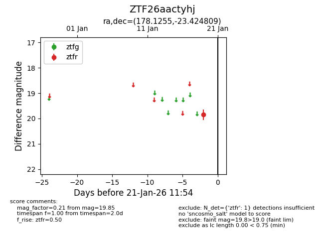
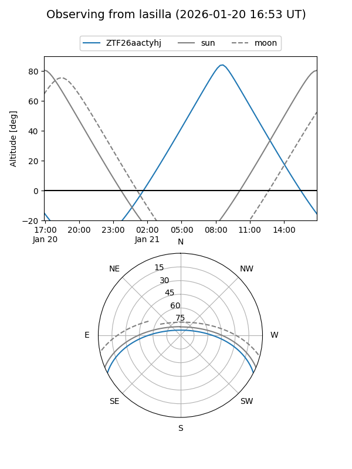
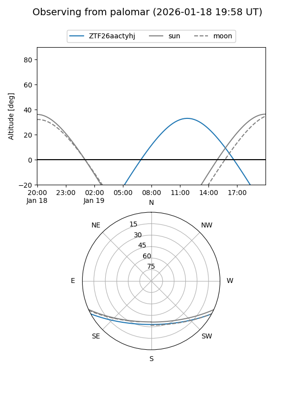

ZTF26aactyhj
Target ZTF26aactyhj at 2026-01-21 11:56
Aliases and brokers:
FINK: link
Lasair: link
ALeRCE: link
alt names
ZTF26aactyhj (ztf,fink_ztf)
Coordinates:
equatorial (ra, dec) = 178.1255,-23.42481
equatorial (HMS+DMS) = 11:52:30.12,-23:25:29.31
galactic (l, b) = (285.8292,+37.48184)
Flags:
Photometry:
last ztfr=19.85
1 ztfr detections
Lightcurve

Visibility


Additional plots